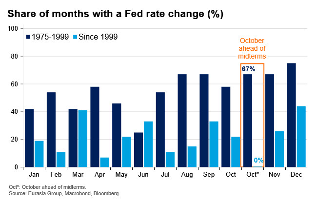
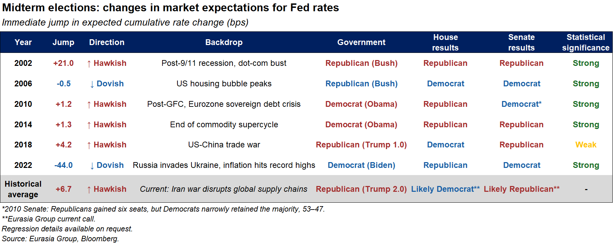
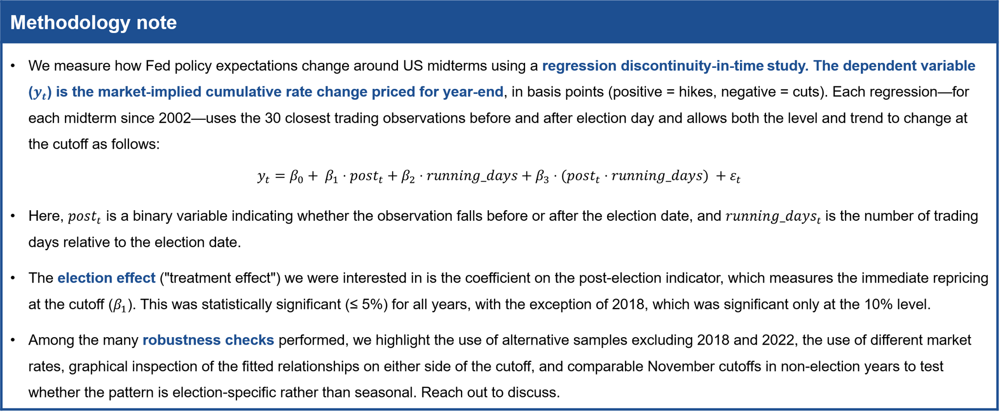

|
 |
|||
|
||||
|
||
US midterms typically prompt a rapid reset in Fed rate expectations. In previous cycles, the 30-day window around election day has captured shifts of varying magnitudes in the expected number and timing of Fed hikes or cuts. The mechanism is intuitive: Elections clear away residual uncertainty, and when results surprise, they also change the expected fiscal path, which feeds directly into expectations for Fed rates. Historically, these underlying dynamics have tended to coincide with a more hawkish turn, though two factors make the comparison less precise in this cycle. First, Trump 2.0 has already upended enough historical precedents to caution against direct comparisons. Second, a renewed US-Iran ceasefire and the associated normalization of supply chain disruptions would relieve pressure on the Fed through a separate channel. One possible explanation for this historical pattern is the Fed’s reluctance to adjust rates close to election day. Policy action at that moment risks being perceived as politically motivated. The Fed has not adjusted policy rates in October of a midterm year since 1998 (see chart below), whereas October moves were as common as in other months in the years before then. A caveat to the post-1998 pattern was 2022, when the Fed was playing catch-up and hiked rates by 75 basis points in early November before the elections. Then, after the elections, markets reduced their rate hike expectations by 44 basis points. But overall, the Fed's reluctance to adjust rates ahead of the midterms leaves uncertainty over the policy path unresolved ahead of the vote, creating scope for markets to adjust expectations once the outcome is known. When results surprise, the adjustment may be amplified through the fiscal channel as markets reassess the outlook for spending, deficits, and taxation. Those changes affect growth and inflation outlooks and, in turn, the expected path of the Fed’s policy rates.  Our quantitative analysis assesses how markets repriced Fed rate expectations around past midterms. We run regressions that estimate the “jump” in Fed pricing by comparing the periods immediately before and after each election, capturing the market’s initial reset as results come in. Our findings—summarized in the table below—suggest that midterms can quickly reshape the market-implied Fed rate path. The magnitude and direction vary across cycles, reflecting different economic backdrops rather than a mechanical hawkish or dovish bias. However, post-election moves lift the implied Fed path on average, with markets pricing fewer cuts or more hikes. Overall, the effects are small but statistically significant. In other words, markets do reprice immediately around midterms (a statistically significant result), but usually by less than 25 basis points (not necessarily economically significant moves). Please refer to the methodology note at the end for additional information on the empirical approach.  What does our analysis imply for this year’s midterms? When congressional control shifts, markets interpret the result as a signal of a different fiscal path and recalibrate expectations accordingly, even before election day. If Republicans retain control of both houses of Congress this year, a 2027 reconciliation bill would remain possible. That bill, however, would likely be close to net-neutral or could even reduce spending overall, depending on the scale of welfare cuts. The main risk to this outlook would be a reconciliation bill that includes a large increase in defense spending as well as personal tax cuts but does not offset them with further welfare cuts or revenue-raisers. However, if Democrats take the House—currently the most probable outcome (see: Conference Call Notes US Politics: Into the Midterms, 17 June 2026)—fiscal slippage would become more likely because welfare cuts would face a greater risk of delay or dilution. On balance, this year’s midterms could modestly increase the odds of fiscal expansion relative to current policy over the next two years. All else equal, that outcome would sustain a hawkish bias in Fed expectations because stronger fiscal support would increase expected growth and inflation pressures.  |